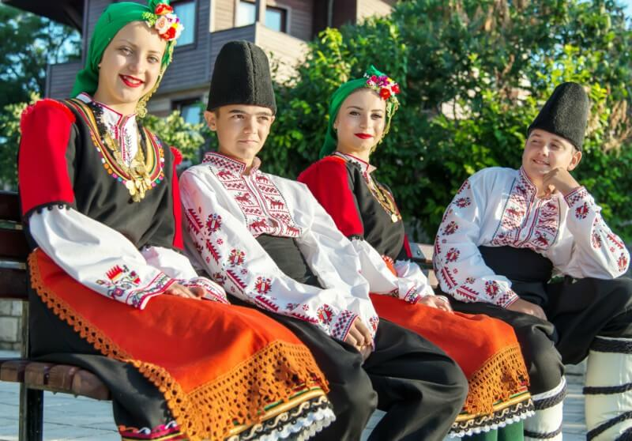

Romênia
Romênia
Informações sobre o país
Saiba mais abaixo
História
Pré-História
O território da atual Romênia é habitado por diferentes grupos de pessoas desde a pré-história. Em fevereiro de 2002, durante uma expedição espeleológica nos Cárpatos, foi descoberta uma câmara cárstica, agora chamada de Peştera cu Oase (A Caverna com Ossos), cheia de restos de ursos-das-cavernas e um fóssil de crânio humano, do sexo masculino com maxilar adulto, datado por radiocarbono entre 34 e 36 mil anos, o que faz dele um dos fósseis mais antigos de humanos modernos (Homo sapiens) encontrados até hoje na Europa. Esse crânio apresenta características tanto de humanos modernos quanto de Neardertais. De acordo com um artigo de Erik Trinkaus e outros, publicado pela Proceedings of the National Academy of Sciences em janeiro de 2007, esses achado sugere que os dois grupos se mesclaram há milhares de anos. É possível que o indivíduo dono do crânio tenha estado entre os primeiros a ocupar o continente. Esses restos são especialmente interessantes porque apresentam uma mistura de características arcaicas de humanos modernos e características morfológicas neardertais.
Dácia
O território da atual Romênia era habitado desde pelo menos 513 a.C. pelos getas, uma tribo trácia. Sob a liderança de Burebista (70-44 a.C.), os dácios se tornaram um estado poderoso que ameaçava mesmo os interesses regionais dos romanos. Júlio César pretendia iniciar uma campanha contra os dácios, mas foi assassinado em 44 a.C. Alguns meses depois, Burebista compartilhava do mesmo destino, assassinado pelos seus próprios nobres. Seu poderoso estado dividiu-se em quatro e não se tornou novamente unificado até o ano de 95, no reinado de Decébalo. O estado dácio manteve uma série de conflitos com o Império Romano em expansão, e foi finalmente conquistado em 106 d.C. pelo imperador romano Trajano, durante o reinado do rei dácio Decébalo. Os romanos fortemente colonizaram a província, e, assim, começou um período de intensa romanização, mais tarde o latim vulgar local daria origem a língua romena. Diante de sucessivas invasões dos godos e cárpitas, a administração romana retirou-se dois séculos mais tarde.
Idade Média
Múltiplas ondas de invasões se sucederam, como a dos eslavos no século VI, dos búlgaros e magiares no século IX e dos tártaros no século XIII. Muitos pequenos estados locais foram criados, mas apenas no século XIII os principais maiores da Moldávia e da Valáquia surgiram para enfrentar o perigo de uma nova ameaça na forma dos turcos otomanos, que conquistaram Constantinopla em 1453. Em 1541, toda a Península Balcânica e a maior parte da Hungria se tornaram províncias otomanas. A Moldávia, a Valáquia e a Transilvânia permaneceram autônomas, sob suserania otomana. No século XII, a Transilvânia se tornou uma parte largamente autônoma do Reino da Hungria. Reis da Hungria convidaram os pechenegues e cumanos da Valáquia para se estabelecerem na Transilvânia, assim como os szecklers, a Ordem Teutônica e os saxões e suábios. No ano 1600, os principados da Valáquia, Moldávia e Transilvânia foram unificadas pelo bano (príncipe) valáquio Miguel, o Valente, mas a unidade se dissolveu após Mihai ser morto, apenas um ano mais tarde, pelos soldados de um general do exército austríaco chamado Giorgio Basta. Em 1699, a Transilvânia se tornou uma possessão do Império Austríaco após a derrota dos turcos. Os austríacos, por sua vez, expandiram rapidamente seu império: em 1718, uma importante parte da Valáquia, chamada Oltênia, foi incorporada ao Império Austríaco e foi devolvida apenas em 1739. Em 1775, o Império Austríaco ocupou a parte noroeste da Moldávia, posteriormente chamada de Bucovina, enquanto que a parte oriental do principado (chamada Bessarábia) foi ocupada em 1812 pela Rússia.
O despertar nacional da Romênia
Como na maioria dos países europeus, 1848 trouxe revolução à Moldávia, Valáquia e Transilvânia, anunciada por Tudor Vladimirescu e sua tentativa com pandurs em 1821. As metas dos revolucionários - independência completa para os dois primeiros e emancipação nacional para o terceiro - permaneceram não realizadas, mas foram a base de evoluções subsequentes. Além disso, o levante ajudou a população dos três principados a reconhecer sua unidade linguística e de interesses. Pesadamente taxado e mal administrado pelo Império Otomano, em 1859, o povo tanto da Moldávia como da Valáquia elegeu o mesmo "domnitor" (governante) - Alexandry Ioan Cuza - como príncipe.
Reino da Romênia
O Antigo Reino
Em 1866, o príncipe alemão Carlos de Hohenzollern-Sigmaringen foi apontado como príncipe para pôr um fim à rivalidade e luta pelo poder por parte das facções boyar romenas. Em 1877, a Romênia declarou independência do Império Otomano e, após uma guerra turca-romena-russa, sua independência foi reconhecida pelo Tratado de Berlim, 1878. Após a guerra a Romênia adquiriu Dobruja, mas foi forçada a ceder a Bessarábia meridional à Rússia. Carlos foi coroado como Carlos I, o primeiro rei da Romênia, em 1881. O novo Estado, comprimido entre os grandes poderes dos impérios otomano, austro-húngaro e russo, voltou-se para o oeste, especialmente a França, em busca de seus modelos culturais, educacionais, militares e administrativos. Em 1916, a Romênia entrou na Primeira Guerra Mundial do lado da Entente. Ao final da guerra, os impérios austro-húngaro e russo haviam terminado; corpos governamentais criados na Transilvânia, Bessarábia e Bucóvina escolheram a união com a Romênia, resultando na Romênia Maior.
Romênia Maior
A maioria dos governos pré-Segunda Guerra Mundial da Romênia mantive a forma, mas não a substância, de uma monarquia constitucional liberal. O movimento nacionalista da Guarda de Ferro se tornou um fato político importante por explorar o medo do comunismo e o ressentimento de uma suposta dominação estrangeira e judaica da economia. Em 1938, para prevenir a formação de um governo que incluiria ministros da Guarda de Ferro, o rei Carlos II dissolveu o governo e instituiu uma ditadura real de vida curta. Em 1939, a Alemanha Nazi e a União Soviética assinaram o Pacto de Molotov-Ribbentrop, que estipulava, entre outras coisas, o "interesse" soviético na Bessarábia.

Cultura
Na Romênia, a cultura foi construída sob a influência dos povos que remontam às origens do país, bem como outros que exerceram domínio sobre aquele território no passado. Além das influências religiosas nas tradições romenas, existem muitas lendas que compõem o folclore do país, além de superstições que fazem parte do imaginário popular. Um exemplo é o dos rituais de proteção realizados pelas pessoas antes da festa de Santo André, em 30 de novembro, para afastar maus espíritos. Na literatura e, posteriormente, na cultura popular, a Romênia ficou conhecida como o país que abriga o castelo do Conde Drácula, personagem criado pelo escritor irlandês Bram Stoker. Na gastronomia, a tocanita é um dos principais pratos, se tratando de uma espécie de ensopado preparado com carne, ingrediente muito usado na cozinha romena, e batata.

Informações Gerais
Nome oficial: Romênia.
Gentílico: romeno.
Extensão territorial: 238.391 km²
Localização: Leste da Europa.
Capital: Bucareste.
Clima: temperado continental.
Governo: república semipresidencialista.
Divisão administrativa: 41 condados.
Idioma: romeno.
Religiões:
igreja ortodoxa: 81,9%;
protestante: 6,4%;
católica romana: 4,3%
outras: 0,9%;
nenhuma e ateus: 0,2%;
sem dados: 6,3%
População: 19.238.000 habitantes.
Densidade demográfica: 83,6 hab./km².
Índice de Desenvolvimento Humano (IDH): 0,828.
Moeda: leu romeno.
Produto Interno Bruto (PIB): US$ 287,28 bilhões.
Política
A Roménia tem um regime semipresidencialista. O chefe de governo é o primeiro-ministro e o chefe de Estado o Presidente, e o poder executivo é exercido pelo governo e pelo presidente. O país está dividido em 41 distritos e o município de Bucareste. Cada distrito é administrado por um conselho distrital, responsável pela administração local e por um prefeito responsável pela gestão dos assuntos nacionais a nível distrital.
Pontos Turísticos
Castelo de Bran
O Castelo de Bran, localizado próximo de Bran, (na vizinhança da cidade de Brașov, no condado com o mesmo nome), é um monumento nacional e marco histórico da Roménia. A fortaleza situa-se na fronteira entre a Transilvânia e a Valáquia, pela estrada 73, erigido na floresta no sopé dos montes Cárpatos. Conhecido habitualmente como o "Castelo do Drácula", é promovido como a residência do personagem que dá título ao romance de Bram Stoker, obra que conduziu à persistência do mito de que este castelo terá servido, em tempos, de residência ao Príncipe Vlad Tepes, governador da Valáquia.Atualmente, o castelo alberga um museu aberto ao público, exibindo peças de arte e mobiliário colecionados pela Rainha Maria. Os turistas podem ver o interior em visitas livres ou guiadas. Ao fundo da colina situa-se um pequeno parque museu ao ar livre, o qual exibe estruturas camponesas tradicionais da Roménia, como cabanas e celeiros, representando todo o país.

Cişmigiu Gardens
O Cișmigiu Gardens é um amplo jardim em estilo inglês com fontes, monumentos e um conhecido lago com barcos, onde o famoso restaurante Monte Carlo está instalado em uma ilha central. Refinadas construções pré-comunistas se alinham na avenida Regina Maria, nas proximidades. A cervejaria Gambrinus, do século 19, serve cerveja local e comida tradicional, e as ruas ao redor contam com lanchonetes, bares e casas noturnas discretas e sofisticadas.
Museu Nacional da Aldeia Dimitrie Gusti
O Museu Nacional da Aldeia Dimitrie Gusti, também conhecido por Museu da Aldeia Romena, é um ecomuseu ao ar livre situado no Parque Herăstrău, em Bucareste, a capital da Roménia. Foi inaugurado em 1936 e mostra aspetos da vida rural entre os séculos XVII e XX e das tradições dos camponeses da Roménia.